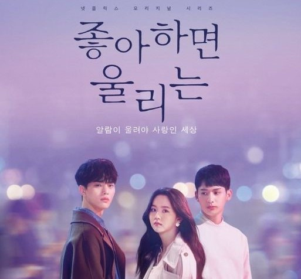
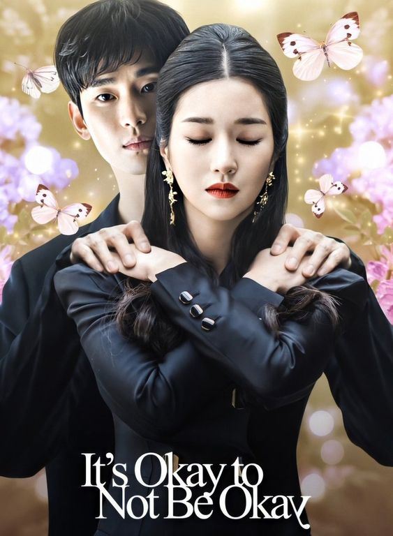
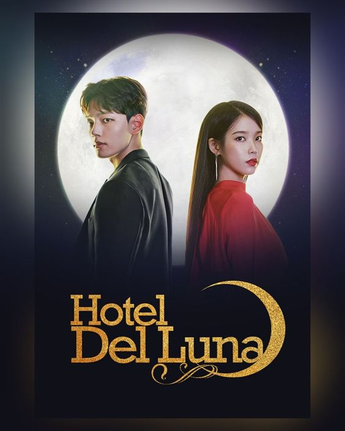
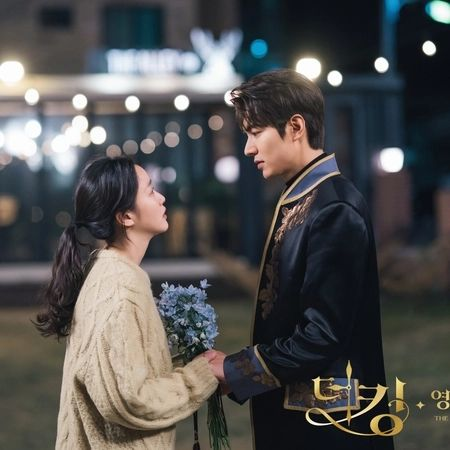
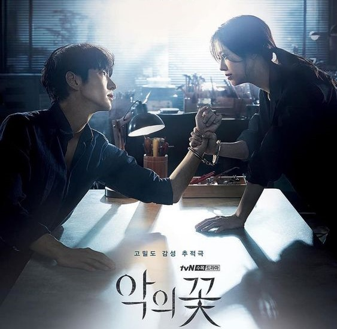

|  |
Love Alarm is a South Korean drama television based series that was cast by Kim So Hyun, Song Kang and Jung Ga Ram. This drama is all about the conflict that happened between the school students and they are involved in a triangle love that was created by an application that known as "Love Alarm". |
|  |
Its Okay Not To Be Okay drama is a South Korean romantic series on Netflix and this drama starring Kim Soo Hyun as Moon Gang Tae and Seo Ye Ji as Ko Mun Yeong. This drama combine a psychiatric ward who does not have a time for love and a feelingless book story writer who does not know what is the definition of love. |
|  |
Hotel Del Luna is such a great movie that was based in South Korea. This drama starring by Lee Ji Eun and Yeo Jin Goo which is the owner and the manager of the hotel that welcoming ghost as their customers. The hotel served the needs of the ghosts in their hotel by providing variety services. 10/10 rate.
|
 |
Moon Lover: Scarlet Heart Ryeo is a series drama that was aired few years ago. This drama starring by Lee Ji Eun, Lee Joon Gi, Kang Ha Neul and other well-performed actors in South Korea. This drama is about a woman from 21st century who went back in time to the Goryeo Dynasty and Go Ha Jin who is the female lead of the drama wakes up as a new person with new identity in the Goryeo Dynasty and she is surrounded with many royal princes. 10000/10 rate for this drama. |
|  |
The King: Eternal Monarch is a 2020 romantic-fantasy South Korean television series starring by Lee Min Ho, Kim Go Eun, Woo Do Hwan and other talented actor and actres. This drama set in a fiction concept. Lee Min Ho who played role as Lee Gon is a modern day Emperor of the Kingdom of Corea and attempts to cross their world into parallel world which is Republic of korea. He is determined to do so for the sake of Kim Go Eun who played role as a Jung Tae Eul. 11/10 rate. |
|
Start Up is the 2020 South Korean television series starring by Bae Suzy, Nam Joo Hyuk and Kim Seon Ho as a highlight of the drama. Basically, the drama is about a Start Up is a set in South korea's fictional Silicon Valley called Sandbox and tells the story of people in the world of start up companies. Seo Dal Mi (Bae Suzy) is an ambitious woman who are pursuing her dreams and she was surrounds with two guys which is Nam Do San and Han Ji Pyeong who are in the same field as her. 12/10 rate. |
|
Vagabond is the 2019 drama that was aired via Netflix and have 16 episodes of a guy who named Cha Dalgeon that was starring by Lee Seung Gi encourages his nephews to go to Morocco for school trip and during the journey of his nephew to the morocco unexpected accident happened and Cha Dalgeon meet Go Hae Ri who works as a Korean Embassy in Morocco for demanding justice of his nephew that was involved in the accident. |
|
Descendant Of The Sun is a drama that was produced in 2016 starring by Song Joong Ki and Song Hye Kyo as the main lead character of the drama. Captain Yoo Si jin (Song Joong Ki) is the captain of a South Korean Special Forces Unit and received a special order is a peacekeeping mission in Uruk and Captain Yoo Si Jin met Doctor Kang Mo yeon who are also working her duty in Uruk. 10/10 rate. |
|  |
Flower Of Evil is a 2020 South Korean television series that starring by Lee Joon Gi and Moon Chae Won as main lead of the drama. This drama consists too much plot twist and unexpected scenes. Cha Ji won (Moon Chae Won) who is a police officer married to Baek Hee Seong who have a two different personality. Baek Hee Seong seems have a bad past experience that he hides from his wife and lives in another person's identity in order to cover up his old personality. 10/10 rate. |